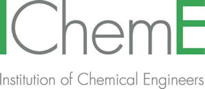
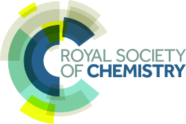
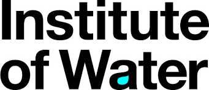
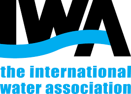

If you didn't join the 2022 Water Climate Discussion live on 3 November, we would recommend watching the recording and participating via the comments first:
The WCD2022 Report is also available to read:
Please take the WCD 2022 Survey and let us know your thoughts on what we should do next year, as well as giving your feedback on this year's Discussion:
And you can pre-register to join us at the COP28 Water Climate Discussion:
The discussion includes live talks from Peter Lefort, Jo Burgess and Martin Currie, along with numerous clips from over 30 contributors structured under Mitigation, Adaptation, Finance & Collaboration. Whole videos from each of the contributors are available below:
Platinum Sponsor
Utility Updates
Anglian Water
Northumbrian Water
Scottish Water
Northern Ireland Water
Yarra Valley Water
VCS Denmark
Yorkshire Water
Dŵr Cymru
Kaduna State Water Corporation
Mitigation
Process Emissions
Minimal Dig
Remote Work
Adaptation
Personal Storage
Food & Tools
Water Efficiency
Nature Based Solutions
Finance
Collaboration
Sponsors
Platinum
Bronze
Organisers:



